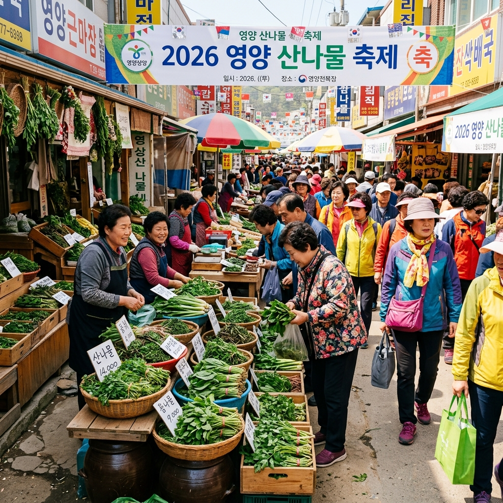
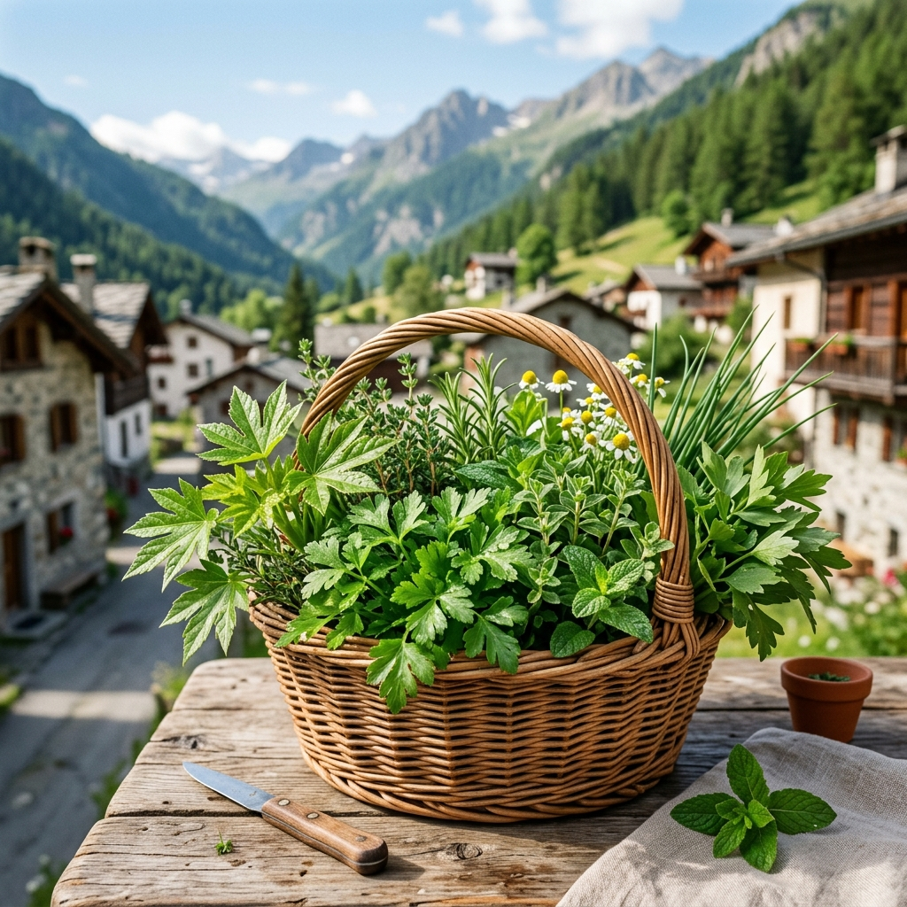
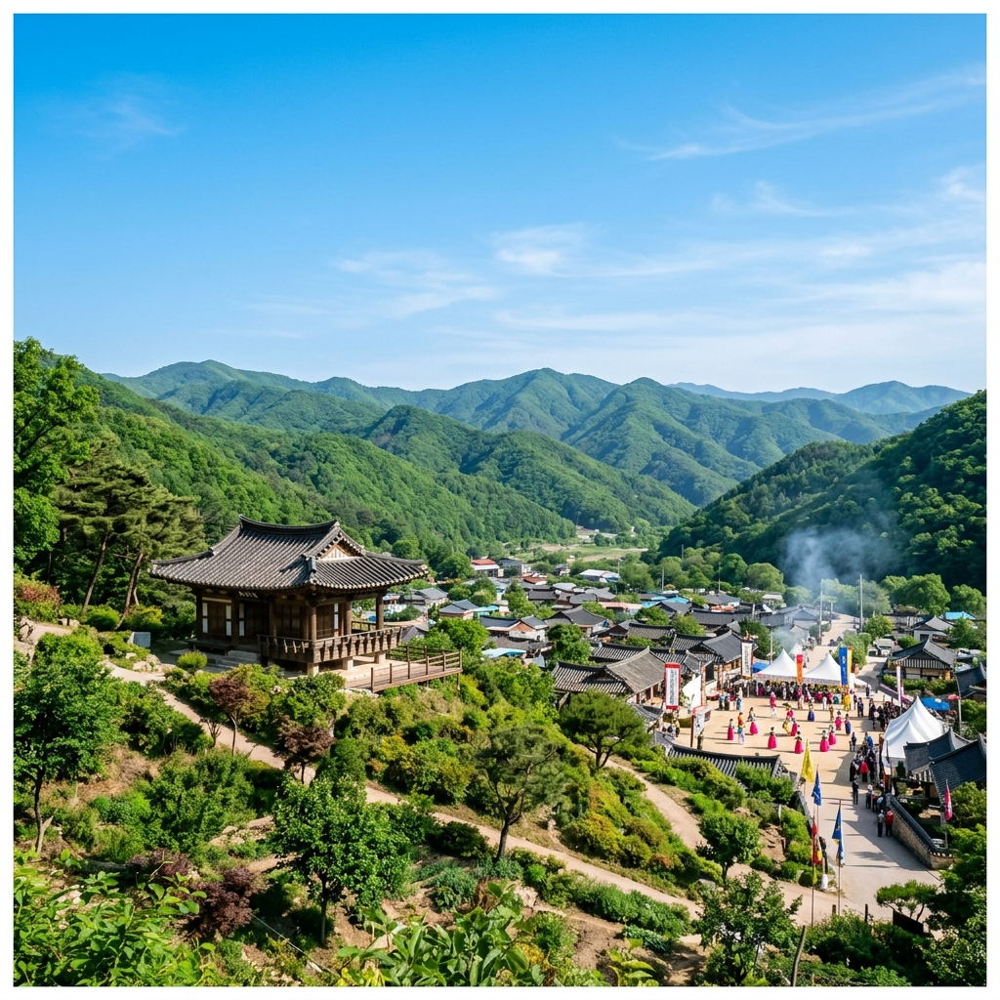

영양 산나물축제 2026 일정 및 주차 정보: 천상의 향기를 만나다
대한민국에서 가장 청정한 지역 중 하나로 손꼽히는 경북 영양에서 5월의 싱그러움을 가득 담은 제21회 영양 산나물축제가 개최됩니다. 해발 고도가 높고 일교차가 큰 영양의 산나물은 그 향과 맛이 깊기로 유명하여 전국의 미식가들이 매년 손꼽아 기다리는 행사인데요. 이번 포스팅에서는 2026년 축제 일정, 주차장 이용 팁, 그리고 절대 놓쳐서는 안 될 산나물 장터 이용법까지 꼼꼼하게 안내해 드리겠습니다.
1. 제21회 영양 산나물축제 상세 일정 및 장소
올해 축제는 2026년 5월 7일(목)부터 5월 10일(일)까지 4일간 영양군청 및 일월산 일원에서 화려하게 펼쳐집니다. '천상의 향기를 담다'라는 주제 아래, 영양의 청정 자연이 선물한 산나물을 직접 보고, 맛보고, 구매할 수 있는 다채로운 프로그램이 마련되어 있습니다.
특히 개막 첫날에는 영양전통시장과 연계한 성대한 퍼레이드가 진행되며, 축제 기간 내내 유명 가수들의 축하 공연과 산나물 가요제 등 볼거리가 풍성합니다. 일월산의 맑은 공기를 마시며 즐기는 축제는 일상의 스트레스를 날려버리기에 충분합니다.

축제 분위기가 물씬 풍기는 활기찬 산나물 장터 / AI 제작 이미지
2. 초보 방문객을 위한 주차장 및 셔틀버스 가이드
영양은 지형 특성상 도로가 좁고 축제 기간에는 인파가 몰려 주차가 쉽지 않습니다. 가장 먼저 영양군청 주차장을 공략하시되, 만차일 경우를 대비해 영양공설운동장이나 영양여중고 인근 임시 주차장 위치를 미리 파악해 두시는 것이 좋습니다.
다행히 주요 거점과 축제장을 잇는 무료 셔틀버스가 15~20분 간격으로 운행됩니다. 주차 스트레스를 줄이려면 임시 주차장에 차를 대고 셔틀을 이용하는 것이 현명한 선택입니다. 특히 오전 11시 이후에는 중심가 진입이 매우 어려우니 가급적 서둘러 도착하시길 권장합니다.
3. 영양 산나물의 백미: 산나물 장터 제대로 즐기기
축제의 주인공은 역시 산나물입니다. 어수리, 곰취, 참나물 등 영양의 산나물은 품질이 뛰어나기로 정평이 나 있습니다. 산나물 직판장에서는 생산자가 직접 수확한 신선한 나물을 시중보다 저렴한 가격에 믿고 구매할 수 있습니다.
나물을 고를 때는 잎이 연하고 향이 강한 것을 선택하는 것이 좋습니다. 또한, 산나물 장아찌나 말린 나물 등 가공품도 인기가 많으니 선물용으로 준비해 보세요. 택배 발송 서비스도 현장에서 운영하므로 무거운 짐 걱정 없이 쇼핑을 즐기실 수 있습니다.

청정 자연 일월산이 선물한 신선한 산나물 / AI 제작 이미지
4. 가족과 함께하는 '산나물 채취 체험' 참여 방법
단순히 보는 것을 넘어 직접 산나물을 캐보는 경험은 아이들에게 잊지 못할 추억이 됩니다. 축제 기간 중 일월산 산나물 채취 체험 프로그램이 사전에 예약제로 운영됩니다. 영양군청 홈페이지나 축제 공식 SNS를 통해 미리 신청하셔야 참여가 가능합니다.
전문 가이드의 안내에 따라 독초와 식용 나물을 구분하는 법을 배우고, 직접 캔 나물을 가져갈 수도 있습니다. 자연의 소중함을 몸소 느끼는 교육적인 시간은 물론, 직접 수확한 나물로 저녁 식탁을 차리는 기쁨도 누려보세요.
5. 축제장에서 맛보는 영양 3대 미식 투어
영양에 왔다면 산나물 비빔밥은 필수 코스입니다. 갓 수확한 나물의 향긋함과 들기름의 고소함이 어우러진 비빔밥 한 그릇은 여행의 보람을 느끼게 해줍니다.
또한, 영양의 특산물인 고추를 활용한 고추장 불고기와 담백한 도토리묵도 축제장 곳곳에서 맛볼 수 있습니다. 특히 현지 주민들이 운영하는 먹거리 장터에서는 정성 가득한 시골의 맛을 느낄 수 있으니 꼭 들러보시기 바랍니다.
6. 영양의 숨은 비경: 선바위와 남이포 산책
축제장 인근에는 영양의 명소인 선바위가 있습니다. 절벽이 강물 위에 우뚝 솟아 있는 모습이 장관이며, 이곳에서 두 물줄기가 합쳐지는 남이포의 풍경은 한 폭의 수묵화를 연상케 합니다.
잘 조성된 수변 산책로를 따라 걸으며 축제의 열기를 잠시 식히고 여유로운 시간을 가져보세요. 선바위 관광지 내에는 고추박물관과 분재야생화테마파크도 있어 아이들과 함께 둘러보기에 좋습니다.

고즈넉한 정취가 느껴지는 영양의 산촌 마을 전경 / AI 제작 이미지
7. 밤하늘의 보석: 영양 반딧불이 생태공원
영양은 아시아 최초로 국제밤하늘보호공원으로 지정될 만큼 밤하늘이 맑기로 유명합니다. 축제 방문 후 저녁 시간이 된다면 수비면의 반딧불이 생태공원을 방문해 보세요.
도시에서는 볼 수 없는 쏟아지는 별빛과 어둠 속을 수놓는 반딧불이의 비행을 감상할 수 있습니다. 자연 그대로의 밤을 경험할 수 있는 이곳은 영양 여행의 완성이라고 할 수 있습니다. 천문대 프로그램은 사전 예약이 필수이니 참고하시기 바랍니다.
8. 축제 방문 시 유의사항 및 준비물 체크리스트
5월의 영양은 낮에는 덥지만 해가 지면 급격히 기온이 떨어집니다. 여분의 겉옷을 반드시 챙기시고, 산행이나 야외 활동을 위해 편한 신발과 자외선 차단용 모자를 준비하세요.
또한, 산나물 장터에서는 현금 결제가 더 빠를 수 있으니 소정의 현금을 준비하시는 것이 편리합니다. 개인 텀블러나 다회용기를 가져가시면 환경 보호에도 동참하고 축제장 내 일부 할인 혜택을 받을 수도 있습니다.
9. 2026 영양 산나물축제를 향한 에디터의 한마디
빠르게 돌아가는 현대 사회에서 잠시 벗어나 흙냄새와 풀내음 가득한 영양으로 떠나는 여행은 단순한 관광 이상의 의미를 갖습니다. 정직한 땀방울로 길러낸 산나물을 통해 건강한 먹거리의 중요성을 되새기고, 청정 자연이 주는 위로를 받아보세요.
이번 주말, 가족 혹은 사랑하는 사람의 손을 잡고 경북 영양으로 향해보는 건 어떨까요? 산나물의 깊은 향기만큼이나 진한 추억이 여러분을 기다리고 있을 것입니다.
#영양산나물축제
#5월축제
#영양가볼만한곳
#경북여행
#산나물장터
#일월산
#어수리나물
#가족나들이추천
#영양맛집
#반딧불이생태공원